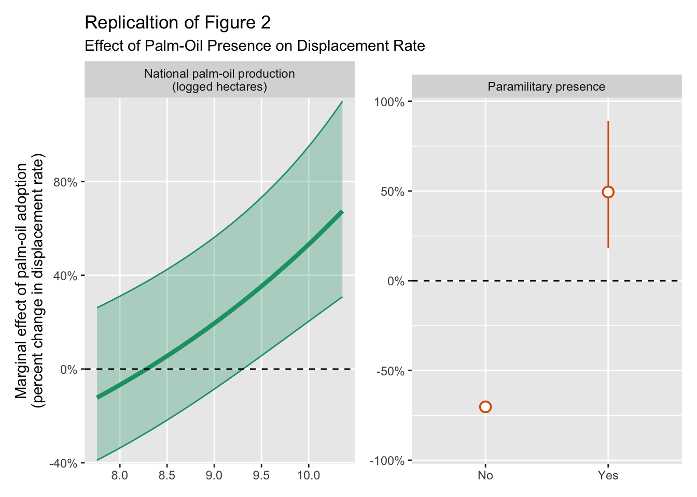

Causal Replication and Reppraisal of Tellez (2022)
‘Land, Opportunism, and Displacement in Civil Wars: Evidence from Colombia’
Abstract
This paper was created for the summative assignment of the course: MY457 Causal Inference for Experimental and Observational Studies (2024-2025 Winter Term). This paper is a replication and reappraisal of the following paper:
Tellez, J. F., (2022) ‘Land, opportunism, and displacement in civil wars: Evidence from Colombia’. American Political Science Review, 116(2), pp.403-418.
Replication code and data can be accessed at:
https://github.com/kevinli03/kevinli03.github.io/tree/main/papers/gv482
Introduction
In this paper, I reappraise Tellez (2022)’s paper on displacement in civil wars in Colombia. First, I introduce the research design that the author employs, and the assumptions needed for causal identification. Then, I reproduce the main results of the paper.
After reproducing the paper, I critically evaluate the research design of Tellez (2022). First, I test and discuss issues regarding the identification assumptions and research design. Then, I discuss the limitations of the two-way fixed effects estimator, and test if the results of the paper are robust under modern difference-in-differences estimators and different specifications of the outcome variable.
Empirical Strategy
Tellez (2022) explores how displacement of civilians occurs during civil wars. More specifically, Tellez focuses on how the opportunity for local actors to expand profitable African Palm-oil plantations results in displacement of local civilians in war-torn areas of Colombia.
The main analysis of the paper is at the municipal level. Tellez compiles a panel dataset of different municipalities in Colombia over a time period of 1993-2005. His main treatment variable is if a municipality has at least 1 African Palm-oil plantation in a specific year, and his outcome variable is the civilian displacement rate per 1000 in a municipality in a specific year. The outcome variable has an inverse-sine transformation applied to it.
During this period, African Palm-oil is rapidly expanding in Colombia, so many, but not all municipalities receive their first African Palm-oil plantation during this time period. This variation across municipalities in adopting the treatment, and the variation in timing of the adoption of treatment, allows Tellez to conduct a difference-in-differences design, exploiting variation over the two dimensions of municipalities and time.
A difference-in-differences design has 3 identification assumptions, which I will introduce now, and evaluate later. The first assumption is parallel trends: if a treated unit had hypothetically not been treated, they would have followed the same trend in the outcome variable as the untreated units. In the context of this study, parallel trends asserts that if a municipality that had a palm-oil plantation hypothetically did not have a palm-oil plantation, the trend in displacement rate of civilians would be the same as the municipalities who did not have a palm-oil plantation.
Tellez (2022) believes “time-varying behaviour of guerrilla groups” and “changes in the drug trade” might result in a violation of the parallel trends assumption. Thus, the author asserts that parallel trends is conditional on two covariates: the presence of coca production, and the amount of left-wing guerrilla attacks in a municipality in a specific year.
The second identification assumption is no anticipation: in the pre-treatment period(s), the observed outcome is equal to the potential outcome under control. In the context of this paper, no anticipation means that the displacement rate of a country in a pre-treatment year is not affected by the anticipation of palm-oil plantations in the future, before the palm-oil plantations have been established in that municipality. Tellez does not justify that he meets this assumption in his paper.
The final assumption for difference-in-differences is the stable unit treatment value assumption (SUTVA): that one unit’s treatment status does not affect the potential outcomes of another unit. In the context of this paper, one municipality getting (or not getting) a palm-oil plantation does not affect the displacement rate of other municipalities. SUTVA also states that treatments are consistent/identical across observations. Tellez does not justify meeting this assumption.
Under these three identification assumptions, the average treatment effect on the treated is identified. I will further explore and evaluate these identification assumptions later.
Replication
To estimate the causal effects, Tellez (2022) employs the two-way fixed effects estimator. Under the assumption of parallel trends, fixed effects for municipalities (unit) and years (time) should make treatment exogenous, allowing for the estimation of treatment effects. I will further discuss this choice of estimator later.
The author conducts 4 different two-way fixed effects models in his analysis. His first model contains relevant covariates to meet conditional parallel trends:
\[ Y_{it} = \alpha_i + \gamma_t + D_{it}\tau + \pmb X_{it}^\top\pmb{\beta} + \varepsilon_{it} \]
Where \(Y_{it}\) is the displacement rate in a municipality (with inverse-sine transformation) in municipality \(i\) in year \(t\), \(\alpha_i\) and \(\gamma_t\) are municipality and year fixed effects, \(D_{it}\) is a binary indicator that indicates the presence of a palm-oil plantation, and \(\mathbf X_{it}\) is a vector of covariates to condition for parallel trends.1
Tellez’s second, third, and fourth models involves an interaction with the treatment variable to explore heterogeneous effects:2
\[ Y_{it}= \alpha_i + \gamma_t + D_{it}\tau + D_{it}G_{it}\theta + \pmb X_{it}^\top\pmb\beta + \varepsilon_{it} \]
- In the second model, \(G_{it}\) is the amount of palm planted each year (logged) to explore heterogeneity based on intensity of palm-oil production.
- In the third model, \(G_{it}\) is an indicator for the presence of the AUC, an allied paramilitary group to many local landlords and actors.
- In the fourth model, \(G_{it}\) is an indicator for the presence of FARC, a left-wing paramilitary group that generally opposes landowners and is less likely to collaborate with local elites.3
The reproduced results of all four models are provided in table 1. For replication, I chose to use the more modern and faster fixest package, rather than the older felm package. The replication results are identical to those presented in the paper.
There is one slight concern with model 4 in the original paper: the author fails to include one of the covariates, FARC-attacks, which was included in all the other models.4 This choice of omission was likely intentional, as this control is very similar to the dummy FARC presence interaction variable. However, the paper does not explain or acknowledge dropping this control variable for model 4. For completeness, I have included an additional model 4*, which includes this control variable.5
Tellez (2022) also runs an estimation of dynamic treatment effects using the Sun and Abraham (2021) estimator. For unclear reasons, Tellez only includes these results in the appendix, but because dynamic treatment effects are useful for both visualising treatment effects over time, as well as assessing the parallel trends assumption, I have (successfully) replicated the results in figure 1.
Tellez (2022) later runs an analysis on how the treatment, palm oil plantations, correlates with modern claims of “land restitution”. However, this analysis is not causal - Tellez himself states “these results cannot be interpreted causally” (Tellez 2022, p. 411). Tellez also runs an household analysis, which he comments that “the causal interpretation of these estimates is limited”. Thus, I do not consider this analysis to be a core part of the paper’s causal analysis. I provide the replication in the appendix.
Evaluation of Assumptions
Parallel Trends Assumption
The parallel trends assumption states if a treated unit had hypothetically not been treated, they would have followed the same trend in the outcome variable as the untreated units. In the context of this study, if a municipality that had a palm-oil plantation hypothetically did not have a palm-oil plantation, the trend in displacement rate of civilians would be the same as the municipalities who did not have a palm-oil plantation. Tellez (2022) asserts that parallel trends in this study is conditional on two covariates: the presence of coca production, and the amount of left-wing guerrilla attacks in a municipality in a specific year.6
A conventional way to test the parallel trends assumption is with a leads-and-lags test. From the reproduced interaction-weighted (Sun and Abraham 2021) dynamic treatment effects in figure 1 above, we can see that there are no statistically significant estimates (at p<0.05) in the pre-treatment period. Thus, this test provides insufficient evidence of a violation of parallel trends.
However, significance testing individual pre-treatment coefficients is not a sufficient approach to test for violations of parallel trends. We also have to consider the substantive size of the estimated deviations in the pre-treatment periods, as well as consider the joint significance of pre-treatment estimates (Liu et al, 2024).
Figure 2 contains two of these pre-trend tests using the fixed effects counterfactual (FEct) estimator proposed by Liu, Xu, and Wang (2024).7 Imputation estimators like FEct generally have greater power in testing pre-trend deviations (Chiu et al 2025). FEct also allows the easy implementation of a joint-significance test (F-test) and a equivalence test (TOST) for substantive significance.
The joint significance F-test of the pre-treatment coefficients checks if there is a significant pre-treatment differential trend: statistical significance indicates there is a differential trend. For this study, the p-value is insignificant for the last 5 pre-treatment years, thus we do not find evidence of violating the parallel trends assumption with this test.
The equivalence test (TOST) for substantive size of estimated deviations checks if the confidence intervals of estimates in the pre-treatment trend exceed an “equivalence” range around 0. The equivalence range is defined as 0.36 times the standard deviation of the outcome variable, after partialling out unit and time fixed effects. A significant result means the pre-treatment estimates are within the equivalence range. For this study, the p-value is insignificant, indicating evidence for a potential violation in parallel trends.
Notably, it seems as the estimate in pre-treatment period -5 is abnormally high, while the others seem to be closer to 0. Since the pre-treatment period -5 is still 5 years before treatment, it may not be entirely relevant to the parallel trends between pre-treatment and post-treatment.8 Figure 3 re-runs the tests, this time only for 4 pre-treatment periods. The p-value for the F-test is higher, which is a good sign for meeting parallel trends. However, the study still fails the equivalence test.
A notable choice the authors make is that they transform the outcome variable, rate of civilian displacement, with an inverse-sine transformation. Their theoretical justification for including an inverse-sine transformation is that it can make the outcome more normally distributed and reduce outliers. However, transformations affect the parallel trends assumption. Figure 4 contains the same parallel trends tests on a non-transformed outcome variable.
Interestingly, the non-transformed outcome variable passes both tests for the parallel trends assumption in 4 pre-treatment years. If parallel trends is met on the non-transformed outcome, that implies that parallel trends cannot be met on the inverse-sine transformed outcome (and vice versa).
This may suggest that Tellez would have been better off dealing with a non-transformed outcome variable. However, we also have to be careful about conditioning our analysis based off of if we pass the parallel trends test, as this can bias our ATT estimates (Roth, 2020). Another concern is that without the inverse-sine transformation, outliers are more influential, which increases the standard deviation of the outcome variable, thus increasing the range of equivalence in our test.9
It is important to note that pre-trend tests for parallel trends are not entirely reliable. Pre-trend tests tend to have less power than our main treatment effect estimates (Roth, 2020). Furthermore, the parallel trend that is essential to difference-in-differences is that of the potential outcome under control for the last pre-treatment and into the post-treatment periods. Since this involves unobserved counterfactuals for the treated units, the pre-trend test does not directly test if the relevant parallel trends needed for identification is met.
No Anticipation and SUTVA
The no anticipation assumption states that in the pre-treatment period(s), the observed outcome is equal to the potential outcome under control. Or in the context of this paper, it means that the displacement rate of a country in a pre-treatment year is not affected by the anticipation of palm-oil plantations in the future, before the palm-oil plantations have been established in that municipality.
Tellez (2022) does not justify that he meets this assumption in his paper. I believe there are theoretical reasons to believe that this assumption is not met. It seems plausible that it takes time to set up the necessary infrastructure and equipment to begin running a palm-oil plantation. That could imply that the land acquisition took place a decent period of time before the actual palm-oil plantation began operation.
Recall that the causal theory of Tellez (2022) is regarding how land acquisition for palm-oil plantations drives displacement. If land acquisition occurs in the previous year before a palm-oil plantation began operation, it is plausible that the “true” treatment occurred in the year prior to the “recorded” treatment in the study. This would mean that the first pre-treatment period’s observed outcomes for treated units would not be their potential outcome under control, but rather the potential outcome under treatment, violating the no anticipation assumption. This could explain the noticable “jump” in difference between treated and untreated in pre-period -5, in both figures 1 and 2.
If anticipation is systematic, i.e. every treated municipality has the same length of pre-treatment anticipation, we could correct for it by changing the treatment variable to align with the anticipation period. However, adjusting for anticipation becomes more difficult if it varies between different municipalities. As I do not have enough theoretical expertise on the subject of palm-oil plantations in Colombia, it is hard for me to select a specific anticipation structure in which to adjust for.
There is also a completely opposite concern - that the opportunistic elites did not initiate land dispalcement until after palm-oil plantations were first established and proven to be profitable in a municipality. While I have no strong theoretical backing of this, the dynamic treatment effects from figure 1 (Sun and Abraham) seem to suggest the statistically significant causal results occurred in the 4th post-treatment period and onward. This could be considered more of a measurement problem - the choice of using the presence of the first palm-oil plantation as the treatment may not be properly approximating when local elites began to initiate forced displacement.
The stable unit treatment value assumption (SUTVA) states that one unit’s treatment status does not affect the potential outcomes of another unit. Or in the context of this paper, one municipality getting (or not getting) a palm-oil plantation does not affect the displacement rate of other municipalities. SUTVA also states that treatments are consistent/identical across observations.
Tellez (2022) does not justify meeting this assumption. I believe there are theoretical reasons to believe this assumption is not met. For example, take neighboring municipalities. If one municipality starts to build land-intensive palm-oil plantations, according to the theoretical causal mechanism, that will cause forced displacement of citizens in that first municipality. Neighboring municipalities will see that municipality have large displacement of civilians. It is plausible that some civilians in the nearby municipalities will also fear for their safety, and flee. It is also plausible that the coercive tactics used by local elites and allied armed groups to acquire land in one municipality would have effects on neighboring citizens.
If this theoretical story is true, that creates issues with our potential outcomes framework. In the normal framework, the potential outcomes \(Y_{it}(d)\) only depend on unit \(i\)’s own treatment status \(d\). However, if the story above is plausible, the potential outcomes of unit \(i\) will now depend on not just unit \(i\)’s treatment status, but also unit \(j\)’s treatment status. This means our individual causal effect will no longer be \(\tau = Y_{it}(1) - Y_{it}(0)\), which will invalidate the identification proof behind difference-in-differences.
Furthermore, it is unlikely that the treatment of palm-oil plantations is stable/consistent/identical across units. After all, a series of massive palm-oil plantations in a municipality is very different than just one smaller palm-oil plantation. Tellez tries to address this in model (2) by interacting palm-oil production levels with treatment. However, Tellez only uses national aggregate palm-oil production data, which fails to capture the differences between municipalities, so this interaction is insufficient to deal with this issue.
Evaluation of Estimation
Tellez (2022) primarily relies on the two-way fixed effects estimator for the main results of the paper. However, in staggered treatment settings with heterogeneous treatment effects, two-way fixed effects no longer is an unbiased estimator of the ATT (Goodman-Bacon 2021). This is because the two-way fixed effects makes incorrect comparisons involving already-treated units, and assigns weights in a manner where some comparisons have negative weights.
The difference-in-differences revolution post 2021 has introduced several new unbiased estimators of the ATT. Tellez (2022) only uses the Sun and Abraham (2021) estimator, and only includes it in the appendix as a check for parallel trends. I will implement several of these modern difference-in-differences estimators, and compare their overall ATT estimates with the results of model (1) from Tellez (2022). The results are shown in figure 5.10
Interestingly, it seems the imputation/counterfactual based estimators (did2s, IFEct, ETWFE) produce significant results, while the matching and reweighting estimators (csdid, IW, DIDmultiple, PanelMatch) produce insignificant effects. The consequence of these results is hard to evaluate, as some estimators find significant effects, while others do not. Imputation/counterfactual estimators are generally more vulnerable to poor model specification - but if the models are specified correctly, they tend to perform better (Chiu et al 2025, Roth et al, 2022). Matching and reweighting methods are more robust to model mispecification, but rely more on the assumptions of Difference-in-differences. It is hard to say which case this study lies in - thus, these new results do not provide conclusive robustness or rejection of the result Tellez (2022) obtains.
As noted in the section on evaluating identification assumptions, it seems that the parallel trends assumption is violated with the inverse-sine transformed outcome. This also puts into question if the above results are valid (although some of the above estimators, such as IFEct, can be somewhat robust to minor violations in parallel trends). Thus, in figure 6, I also implement the same estimators, but with the non-transformed outcome variable.
More of the estimators find a significant causal effect when the outcome variable is not transformed. However, there are two reasons we should be cautious about these results. First, conditioning our analysis based off of if we pass the parallel trends test can bias our ATT estimates (Roth, 2020). Second, without the inverse-sine transformations, outliers are more influential, which may impact our results.
Overall, there is not enough evidence to conclusively support or reject the findings of Tellez (2022). Most new estimators provide similar point estimates to that of the two-way fixed effects estimator. However, in both the transformed and non-transformed outcome models, there are multiple estimators that do not find a significant causal result.
Tellez also runs other models with interactions. One way to test the robustness of these models under modern estimators is to use the 2-stage difference-in-differences estimator (did2s) proposed by Gardner (2021). Gardner does not explicitly state that interactions for heterogeneity are accommodated in the estimator, but we can show it is possible. The estimator first models the potential outcome \(Y_{it}(0)\) by estimating the following regression with only untreated \(D_{it} = 0\) units:
\[ Y_{it}(0) = \alpha_i + \gamma_t + \pmb X_{it}^\top \pmb\beta + \varepsilon_{it} \quad \text{estimate with only units }D_{it} = 0 \]
Then, using the estimates of \(\hat\alpha_i\), \(\hat\gamma_t\), and \(\hat{\pmb\beta}\), we can estimate \(Y_{it}(0)\) for all units:
\[ \widehat Y_{it}(0) = \hat\alpha_i + \hat\gamma_t + \pmb X_{it}^\top \hat{\boldsymbol\beta} \]
Then, for all units, we can calculate the difference/residual, defined as \(\Delta_{it} = Y_{it} - \widehat Y_{it}(0)\). For treated units \(D_{it} = 1\), \(\Delta_{it} \approx \tau_{it}\). For untreated units \(D_{it} = 0\), \(\Delta_{it} \approx 0\). Gardner’s 2nd stage is given by the following regression, where \(\delta \approx 0\).11
\[ \Delta_{it} = \delta + D_{it}\theta + \epsilon_{it} \]
\(\hat\theta = \hat\tau_\text{ATE}\) once estimated with OLS.12 To estimate heterogenous treatment effects, we can include interactions in the final stage, obtaining the following regression model:
\[ \Delta_{it} = \delta + D_{it} \theta + D_{it}G_{it}\phi + \epsilon_{it} \]
Assume \(G_{it}\) is a binary variable for simplicity. We can then use the conditional expectation definition of regression. Since \(\delta \approx 0\), and for treated units \(\Delta = \tau\), we can deduce:
\[ \begin{split} & \mathbb E[\Delta_{it} | D_{it} = 1, G_{it} = 0] \quad = \theta \quad \approx \mathbb E[\tau_{it} | D_{it} = 1, G_{it} = 0] \\ & \mathbb E[\Delta_{it} | D_{it} = 1, G_{it} = 1] \quad = \theta + \phi \quad \approx \mathbb E[\tau_{it} | D_{it} = 1, G_{it} = 1] \end{split} \]
Thus, Gardner’s did2s can be used to uncover heterogeneous treatment effects with interactions, assuming \(\widehat Y_{it}(0)\) is consistently estimated.13 This allows us to check if the heterogeneity Tellez (2022) explores with interactions holds when adjusting for the limitations in two-way fixed effects. The results are shown in table 2.
The Gardner (2021) estimates for models 3, 4, and 4* are relatively similar in magnitude to the original two-way fixed effects estimates. The notable difference is in model 4 and 4*, where the effect of a palm-oil plantation in municipalities without a FARC presence is now statistically significant. Model 3’s similarity in Gardner’s estimator provides robustness to the result Tellez (2022) finds.
The results of model 2 differ quite a lot between the two estimators. In Gardner’s estimator, national production now no longer significantly increases the causal effect of the presence of a palm-oil plantation. This does not support Tellez’s finding.
References
Original Paper
Tellez, J. F., (2022) ‘Land, opportunism, and displacement in civil wars: Evidence from Colombia’. American Political Science Review, 116(2), pp.403-418.
Other References
Baker, A., Callaway, B., Cunningham, S., Goodman-Bacon, A., Sant’Anna, P. H. (2025) ‘Difference-in-Differences Designs: A Practitioner’s Guide’. Available at: https://doi.org/10.48550/arXiv.2503.13323.
Callaway, B., and Sant’Anna, P. H. (2021) ‘Difference-in-differences with multiple time periods’, Journal of Econometrics, 225(2), pp. 200-230.
de Chaisemartin, C., D’Haultfœuille, X., and Vazquez-Bare, G. (2024) ‘Difference-in-Difference Estimators with Continuous Treatments and No Stayers’, American Economic Association Papers and Proceedings, 114, pp. 610-613.
Chiu, A., Lan, X., Liu, Z., Xu, Y. (2025) ‘Causal Panel Analysis under Parallel Trends: Lessons from a Large Reanalysis Study’. Available at: https://doi.org/10.48550/arXiv.2309.15983.
Gardner, J. (2021) ‘Two-stage Difference-in-Differences’. Available at: https://jrgcmu.github.io/2sdd_current.pdf.
Goodman-Bacon, A. (2021) ‘Difference-in-Differences with variation in treatment timing’, Journal of Econometrics, 225(2), pp. 254-277.
Imai, K., Kim, I. S., Wang, E. H. (2023) ‘Matching Methods for Causal Inference with Time-Series Cross-Sectional Data’, American Journal of Political Science, 67(3), pp. 587-605.
Liu, L, Wang, Y., and Xu, Y. (2024) ‘A practical guide to counterfactual estimators with causal inference with time-series cross-sectional data’, American Journal of Political Science, 68(1), pp. 160-176.
Roth, J., Sant’Anna, P. H., Bilinski, A., and Poe, J. (2023) ‘What’s trending in difference-in-differences? A synthesis of the recent econometrics literature’, Journal of Econometrics, 235(2), pp. 2218-2244.
Roth, J. (2022) ‘Pretest with Caution: Event-Study Estimates after Testing for Parallel Trends’, American Economic Review: Insights, 4(3), pp. 305-322.
Sun, L. and Abraham, S. (2021) ‘Estimating dynamic treatment effects in event studies with heterogenous treatment effects’, Journal of Econometrics, 225(2), pp. 175-199.
Wooldridge, J. M. (2021) ‘Two-Way Fixed Effects, the Two-Way Mundlak Regression, and Difference-in-Differences Estimators’. Available at: https://dx.doi.org/10.2139/ssrn.3906345.
Replication Data
Tellez, J. F. (2021) ’Replication Data for: Land, Opportunism, and Displacement in Civil Wars: Evidence from Colombia”, Harvard Dataverse. Available at: https://doi.org/10.7910/DVN/DG2J0F.
Appendix

Footnotes
The covariates included are the presence of coca production, and the amount of left-wing guerrilla attacks in a municipality in a specific year, as mentioned in the research design.↩︎
The variable interacted with treatment is not included separately in the regression.↩︎
Model 4 is actually mis-specified (at least based on how the author’s define it). Model 4* adjusts this error.↩︎
I noticed this discrepancy through the number of observations in each regression model. Note how model 4 has more observations than the other models - this shouldn’t be the case, especially considering model 4 in theory should have the same variables as model 1 + additional variables.↩︎
Including FARC-attacks as a control variable may not make much sense, since the goal of the interaction between plantation and FARC presence is to see how the presence of FARC alters the treatment. We are not really interested in holding FARC-attacks constant in this analysis.↩︎
As mentioned above in research design, coca production is a covariate meant to control for “changes in the drug trade”, which implies that coca production (and druge trade) has some effect on the outcome of displacement. However, in the literature review (p. 406), Tellez argues that “illegal crops” like coca that are grown on “small plots” tend to rarely effect displacement. This seems like a contradiction.↩︎
I chose to use FEct instead of IFEct because IFEct’s inclusion of time-varying latent factors makes it more robust to parallel trends. However, the goal if this test is to see if parallel trends holds for most other estimators that rely on parallel trends without a latent factor.↩︎
The parallel trends assumption requires that the potential outcomes are “parallel” in trend between treatment and control from the pre-treatment period to the post-treatment period. The 5th year before treatment is likely not important to parallel trends if the final 4 pre-treatment periods are parallel.↩︎
The equivalence range is defined as 0.36 times the standard deviation of the outcome variable, after partialling out unit and time fixed effects. Outliers will increase the standard deviation of the outcome variable.↩︎
The ATT is in terms of the inverse-sine transformed outcome variable. For csdid, the doubly-robust estimator is used. For PanelMatch, units are matched on treatment/outcome history for 3 lag periods, and matches are weighted by mahalanobis distance for covariates. Covariates are included for all except DIDmultiple.↩︎
\(\delta \approx 0\) because by the conditional expectation definition of regression, we can see \(\mathbb E[\Delta_{it}|D_{it} = 0] = \delta\), and \(\mathbb E[\Delta_{it}|D_{it} = 0] = \mathbb E[\tau_{it}|D_{it} = 0]\) from above, thus \(\delta = 0\).↩︎
The proof for this is provided by Gardner (2022).↩︎
The proof for this is provided by Gardner (2022).↩︎